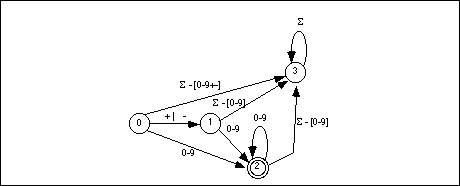
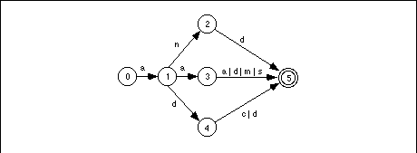

|
Table of Content | Chapter Sixteen (Part 4) |
|
Table of Content | Chapter Sixteen (Part 4) |
| CHAPTER SIXTEEN: PATTERN MATCHING (Part 3) |
| 16.1.2.5 -
Deterministic Finite State Automata (DFAs) 16.1.2.6 - Converting a DFA to Assembly Language |
Nondeterministic finite state automata, when converted to actual program code, may suffer from performance problems because of the backtracking that occurs when matching a string. Deterministic finite state automata solve this problem by comparing different strings in parallel. Whereas, in the worst case, an NFA may require n comparisons, where n is the sum of the lengths of all the strings the NFA recognizes, a DFA requires only m comparisons (worst case), where m is the length of the longest string the DFA recognizes.
For example, suppose you have an NFA that matches the following regular expression (the set of 80x86 real-mode mnemonics that begin with an "A"):
( AAA | AAD | AAM | AAS | ADC | ADD | AND )
A typical implementation as an NFA might look like the following:
MatchAMnem proc near
strcmpl
byte "AAA",0
je matched
strcmpl
byte "AAD",0
je matched
strcmpl
byte "AAM",0
je matched
strcmpl
byte "AAS",0
je matched
strcmpl
byte "ADC",0
je matched
strcmpl
byte "ADD",0
je matched
strcmpl
byte "AND",0
je matched
clc
ret
matched: add di, 3
stc
ret
MatchAMnem endp
If you pass this NFA a string that it doesn't match, e.g.,
"AAND", it must perform seven string comparisons, which works out to about 18
character comparisons (plus all the overhead of calling strcmpl). In fact, a
DFA can determine that it does not match this character string by comparing only three
characters.
A DFA is a special form of an NFA with two restrictions. First, there must be exactly one edge coming out of each node for each of the possible input characters; this implies that there must be one edge for each possible input symbol and you may not have two edges with the same input symbol. Second, you cannot move from one state to another on the empty string, . A DFA is deterministic because at each state the next input symbol determines the next state you will enter. Since each input symbol has an edge associated with it, there is never a case where a DFA "jams" because you cannot leave the state on that input symbol. Similarly, the new state you enter is never ambiguous because there is only one edge leaving any particular state with the current input symbol on it. Figure16.2 shows the DFA that handles integer constants described by the regular expression

(+ | - | ) [0-9]+
Note than an expression of the form " -
[0-9]" means any character except a digit; that is, the complement
of the set [0-9].
-
[0-9]" means any character except a digit; that is, the complement
of the set [0-9].
State three is a failure state. It is not an accepting state and once the DFA enters a failure state, it is stuck there (i.e., it will consume all additional characters in the input string without leaving the failure state). Once you enter a failure state, the DFA has already rejected the input string. Of course, this is not the only way to reject a string; the DFA above, for example, rejects the empty string (since that leaves you in state zero) and it rejects a string containing only a "+" or a "-" character.
DFAs generally contain more states than a comparable NFA. To help keep the size of a DFA under control, we will allow a few shortcuts that, in no way, affect the operation of a DFA. First, we will remove the restriction that there be an edge associated with each possible input symbol leaving every state. Most of the edges leaving a particular state lead to the failure state. Therefore, our first simplification will be to allow DFAs to drop the edges that lead to a failure state. If a input symbol is not represented on an outgoing edge from some state, we will assume that it leads to a failure state. The above DFA with this simplification appears in Figure 16.2.
A second shortcut, that is actually present in the two examples above, is to allow sets of characters (or the alternation symbol, "|") to associate several characters with a single edge. Finally, we will also allow strings attached to an edge. This is a shorthand notation for a list of states which recognize each successive character, i.e., the following two DFAs are equivalent:
Returning to the regular expression that recognizes 80x86 real-mode mnemonics beginning with an "A", we can construct a DFA that recognizes such strings as shown in Figure 16.4.

If you trace through this DFA by hand on several accepting and rejecting strings, you will discover than it requires no more than six character comparisons to determine whether the DFA should accept or reject an input string.
Although we are not going to discuss the specifics here, it turns out that regular expressions, NFAs, and DFAs are all equivalent. That is, you can convert anyone of these to the others. In particular, you can always convert an NFA to a DFA. Although the conversion isn't totally trivial, especially if you want an optimized DFA, it is always possible to do so. Converting between all these forms is beginning to leave the scope of this text. If you are interested in the details, any text on formal languages or automata theory will fill you in.
16.1.2.6 Converting a DFA to Assembly Language
It is relatively straightforward to convert a DFA to a sequence of assembly instructions. For example, the assembly code for the DFA that accepts the A-mnemonics in the previous section is
DFA_A_Mnem proc near
cmp byte ptr es:[di], 'A'
jne Fail
cmp byte ptr es:[di+1], 'A'
je DoAA
cmp byte ptr es:[di+1], 'D'
je DoAD
cmp byte ptr es:[di+1], 'N'
je DoAN
Fail: clc
ret
DoAN: cmp byte ptr es:[di+2], 'D'
jne Fail
Succeed: add di, 3
stc
ret
DoAD: cmp byte ptr es:[di+2], 'D'
je Succeed
cmp byte ptr es:[di+2], 'C'
je Succeed
clc ;Return Failure
ret
DoAA: cmp byte ptr es:[di+2], 'A'
je Succeed
cmp byte ptr es:[di+2], 'D'
je Succeed
cmp byte ptr es:[di+2], 'M'
je Succeed
cmp byte ptr es:[di+2], 'S'
je Succeed
clc
ret
DFA_A_Mnem endp
Although this scheme works and is considerably more efficient than the coding scheme for NFAs, writing this code can be tedious, especially when converting a large DFA to assembly code. There is a technique that makes converting DFAs to assembly code almost trivial, although it can consume quite a bit of space - to use state machines. A simple state machine is a two dimensional array. The columns are indexed by the possible characters in the input string and the rows are indexed by state number (i.e., the states in the DFA). Each element of the array is a new state number. The algorithm to match a given string using a state machine is trivial, it is
state := 0; while (another input character ) do begin ch := next input character ; state := StateTable [state][ch]; end; if (state in FinalStates) then accept else reject;
FinalStates is a set of accepting states. If
the current state number is in this set after the algorithm exhausts the characters in the
string, then the state machine accepts the string, otherwise it rejects the string.
The following state table corresponds to the DFA for the "A" mnemonics appearing in the previous section:
| State | A | C | D | M | N | S | Else |
|---|---|---|---|---|---|---|---|
| 0 | 1 | F | F | F | F | F | F |
| 1 | 3 | F | 4 | F | 2 | F | F |
| 2 | F | F | 5 | F | F | F | F |
| 3 | 5 | F | 5 | 5 | F | 5 | F |
| 4 | F | 5 | 5 | F | F | F | F |
| 5 | F | F | F | F | F | F | F |
| F | F | F | F | F | F | F | F |
State five is the only accepting state.
There is one major drawback to using this table driven scheme - the table will be quite large. This is not apparent in the table above because the column labelled "Else" hides considerable detail. In a true state table, you will need one column for each possible input character. since there are 256 possible input characters (or at least 128 if you're willing to stick to seven bit ASCII), the table above will have 256 columns. With only one byte per element, this works out to about 2K for this small state machine. Larger state machines could generate very large tables.
One way to reduce the size of the table at a (very) slight loss in execution speed is to classify the characters before using them as an index into a state table. By using a single 256-byte lookup table, it is easy to reduce the state machine to the table above. Consider the 256 byte lookup table that contains:
Now we can modify the above table to produce:
| State | 0 | 1 | 2 | 3 | 4 | 5 | 6 | 7 |
|---|---|---|---|---|---|---|---|---|
| 0 | 6 | 1 | 6 | 6 | 6 | 6 | 6 | 6 |
| 1 | 6 | 3 | 6 | 4 | 6 | 2 | 6 | 6 |
| 2 | 6 | 6 | 6 | 5 | 6 | 6 | 6 | 6 |
| 3 | 6 | 5 | 6 | 5 | 5 | 6 | 5 | 6 |
| 4 | 6 | 6 | 5 | 5 | 6 | 6 | 6 | 6 |
| 5 | 6 | 6 | 6 | 6 | 6 | 6 | 6 | 6 |
| 6 | 6 | 6 | 6 | 6 | 6 | 6 | 6 | 6 |
The table above contains an extra column, "7", that we will not use. The reason for adding the extra column is to make it easy to index into this two dimensional array (since the extra column lets us multiply the state number by eight rather than seven).
Assuming Classify is the name of the lookup table, the following 80386 code recognizes the strings specified by this DFA:
DFA2_A_Mnem proc
push ebx ;Ptr to Classify.
push eax ;Current character.
push ecx ;Current state.
xor eax, eax ;EAX := 0
mov ebx, eax ;EBX := 0
mov ecx, eax ;ECX (state) := 0
lea bx, Classify
WhileNotEOS: mov al, es:[di] ;Get next input char.
cmp al, 0 ;At end of string?
je AtEOS
xlat ;Classify character.
mov cl, State_Tbl[eax+ecx*8] ;Get new state #.
inc di ;Move on to next char.
jmp WhileNotEOS
AtEOS: cmp cl, 5 ;In accepting state?
stc ;Assume acceptance.
je Accept
clc
Accept: pop ecx
pop eax
pop ebx
ret
DFA2_A_Mnem endp
The nice thing about this DFA (the DFA is the combination
of the classification table, the state table, and the above code) is that it is very easy
to modify. To handle any other state machine (with eight or fewer character
classifications) you need only modify the Classification array, the State_Tbl
array, the lea bx, Classify statement and the statements at label AtEOS
that determine if the machine is in a final state. The assembly code does not get more
complex as the DFA grows in size. The State_Tbl array will get larger as you add more
states, but this does not affect the assembly code.
Of course, the assembly code above does assume there are
exactly eight columns in the matrix. It is easy to generalize this code by inserting an
appropriate imul instruction to multiply by the size of the array. For
example, had we gone with seven columns rather than eight, the code above would be
DFA2_A_Mnem proc
push ebx ;Ptr to Classify.
push eax ;Current character.
push ecx ;Current state.
xor eax, eax ;EAX := 0
mov ebx, eax ;EBX := 0
mov ecx, eax ;ECX (state) := 0
lea bx, Classify
WhileNotEOS: mov al, es:[di] ;Get next input char.
cmp al, 0 ;At end of string?
je AtEOS
xlat ;Classify character.
imul cx, 7
movzx ecx, State_Tbl[eax+ecx] ;Get new state #.
inc di ;Move on to next char.
jmp WhileNotEOS
AtEOS: cmp cl, 5 ;In accepting state?
stc ;Assume acceptance.
je Accept
clc
Accept: pop ecx
pop eax
pop ebx
ret
DFA2_A_Mnem endp
Although using a state table in this manner simplifies the assembly coding, it does suffer from two drawbacks. First, as mentioned earlier, it is slower. This technique has to execute all the statements in the while loop for each character it matches; and those instructions are not particularly fast ones, either. The second drawback is that you've got to create the state table for the state machine; that process is tedious and error prone.
If you need the absolute highest performance, you can use the state machine techniques described in Chapter Ten. The trick here is to represent each state with a short segment of code and its own one dimensional state table. Each entry in the table is the target address of the segment of code representing the next state. The following is an example of our "A Mnemonic" state machine written in this fashion. The only difference is that the zero byte is classified to value seven (zero marks the end of the string, we will use this to determine when we encounter the end of the string). The corresponding state table would be:
| State | 0 | 1 | 2 | 3 | 4 | 5 | 6 | 7 |
|---|---|---|---|---|---|---|---|---|
| 0 | 6 | 1 | 6 | 6 | 6 | 6 | 6 | 6 |
| 1 | 6 | 3 | 6 | 4 | 6 | 2 | 6 | 6 |
| 2 | 6 | 6 | 6 | 5 | 6 | 6 | 6 | 6 |
| 3 | 6 | 5 | 6 | 5 | 5 | 6 | 5 | 6 |
| 4 | 6 | 6 | 5 | 5 | 6 | 6 | 6 | 6 |
| 5 | 6 | 6 | 6 | 6 | 6 | 6 | 6 | 5 |
| 6 | 6 | 6 | 6 | 6 | 6 | 6 | 6 | 6 |
The 80x86 code is
DFA3_A_Mnem proc
push ebx
push eax
push ecx
xor eax, eax
lea ebx, Classify
State0: mov al, es:[di]
xlat
inc di
jmp cseg:State0Tbl[eax*2]
State0Tbl word State6, State1, State6, State6
word State6, State6, State6, State6
State1: mov al, es:[di]
xlat
inc di
jmp cseg:State1Tbl[eax*2]
State1Tbl word State6, State3, State6, State4
word State6, State2, State6, State6
State2: mov al, es:[di]
xlat
inc di
jmp cseg:State2Tbl[eax*2]
State2Tbl word State6, State6, State6, State5
word State6, State6, State6, State6
State3: mov al, es:[di]
xlat
inc di
jmp cseg:State3Tbl[eax*2]
State3Tbl word State6, State5, State6, State5
word State5, State6, State5, State6
State4: mov al, es:[di]
xlat
inc di
jmp cseg:State4Tbl[eax*2]
State4Tbl word State6, State6, State5, State5
word State6, State6, State6, State6
State5: mov al, es:[di]
cmp al, 0
jne State6
stc
pop ecx
pop eax
pop ebx
ret
State6: clc
pop ecx
pop eax
pop ebx
ret
There are two important features you should note about this code. First, it only executes four instructions per character comparison (fewer, on the average, than the other techniques). Second, the instant the DFA detects failure it stops processing the input characters. The other table driven DFA techniques blindly process the entire string, even after it is obvious that the machine is locked in a failure state.
Also note that this code treats the accepting and failure states a little differently than the generic state table code. This code recognizes the fact that once we're in state five it will either succeed (if EOS is the next character) or fail. Likewise, in state six this code knows better than to try searching any farther.
Of course, this technique is not as easy to modify for different DFAs as a simple state table version, but it is quite a bit faster. If you're looking for speed, this is a good way to code a DFA.
|
Table of Content | Chapter Sixteen (Part 4) |
Chapter Sixteen: Pattern Matching
(Part 3)
29 SEP 1996